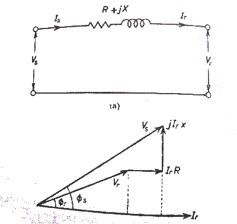
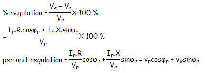
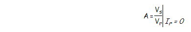
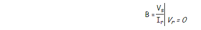
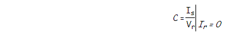
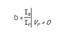

Short Transmission Line
The transmission lines which have length less than 80 km are generally referred as short transmission lines.
For short length, the shunt capacitance of this type of line is neglected and other parameters like electrical resistance and inductor of these short lines are lumped, hence the equivalent circuit is represented as given below,
Let’s draw the vector diagram for this equivalent circuit, taking receiving end electric current Ir as reference. The sending end and receiving end voltages make angle with that reference receiving end current, of φs and φr, respectively.
As the shunt capacitance of the line is neglected, hence sending end electric current and receiving end electric current is same, i.e.
Is = Ir.
Now if we observe the vector diagram carefully, we will get,
Vs is approximately equal to
Vr + Ir.R.cosφr + Ir.X.sinφr
That means,
Vs ≅ Vr + Ir.R.cosφr + Ir.X.sinφr as the it is assumed that φs ≅ φr
As there is no capacitance, during no load condition the electric current through the line is considered as zero, hence at no load condition, receiving end voltage is the same as sending end voltage.
As per dentition of voltage regulation of power transmission line,

Here, vr and vx are the per unit resistance and reactance of the short transmission line.
Any electrical network generally has two input terminals and two output terminals. If we consider any complex electrical network in a black box, it will have two input terminals and output terminals. This network is called two - port network. Two port model of a network simplifies the network solving technique. Mathematically a two port network can be solved by 2 by 2 matrix.
A transmission as it is also an electrical network, line can be represented as two port network.
Hence two port network of transmission line can be represented as 2 by 2 matrixes. Here the concept of ABCD parameters comes. Voltage and currents of the network can represented as ,
Where A, B, C and D are different constant of the network.
If we put Ir = 0 at equation (1), we get,

Hence, A is the voltage impressed at the sending end per volt at the receiving end when receiving end is open. It is dimension less.
If we put Vr = 0 at equation (1), we get

That indicates it is impedance of the transmission line when the receiving terminals are short circuited. This parameter is referred as transfer impedance.

C is the electric current in amperes into the sending end per volt on open circuited receiving end. It has the dimension of admittance.

D is the electric current in amperes into the sending end per amp on short circuited receiving end. It is dimensionless.
Now from equivalent circuit, it is found that,
Comparing these equations with equation 1 and 2 we get,
A = 1, B = Z, C = 0 and D = 1. As we know that the constant A, B, C and D are related for passive network as,
Here, A = 1, B = Z, C = 0 and D = 1
 by
by